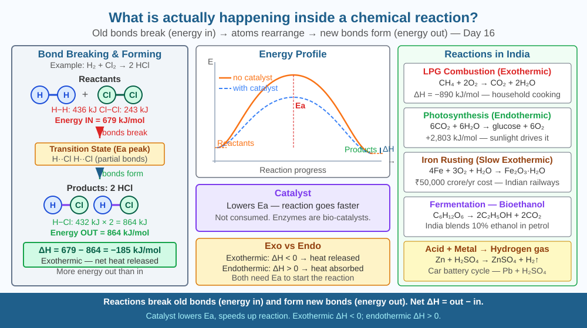

Discover what actually happens at the molecular level when substances react — and understand the concepts of activation energy, bond energy, and catalysts that govern every reaction in chemistry.
Mix baking soda and vinegar — fizzing explosion. Strike a match — fire. Leave iron in rain — rust. Add yeast to dough — it rises. All of these are chemical reactions, but what is actually happening? Atoms cannot be created or destroyed (conservation of mass) — so where do the new substances come from? The ingredients disappear but new materials appear. At the scale of a millionth of a millimetre, what is actually occurring between molecules when a reaction happens?
What a chemical reaction is at the molecular level:
A chemical reaction involves the breaking of existing chemical bonds between atoms and the forming of new bonds — rearranging atoms into new combinations.
Atoms themselves are never created or destroyed (Lavoisier's Law of Conservation of Mass). Only their connections change.
Example — combustion of methane (natural gas, LPG):
CH₄ + 2O₂ → CO₂ + 2H₂O
At the molecular level: - 4 C–H bonds in CH₄ are broken (requires energy: endothermic bond-breaking) - 2 O=O bonds in O₂ are broken (requires energy) - 2 C=O bonds in CO₂ are formed (releases energy: exothermic bond-forming) - 4 O–H bonds in 2H₂O are formed (releases energy) - Net energy: bond energy released > bond energy required → exothermic reaction → heat and light produced
Activation energy:
Even exothermic reactions require an initial energy input to start — the activation energy (Eₐ). This is the energy needed to weaken bonds enough for the reaction to begin.
The match's flame provides Eₐ to start the gas burning. Once started, the exothermic reaction provides enough energy to sustain itself.
Catalysts:
A catalyst provides an alternative reaction pathway with a lower activation energy. It is not consumed — it is the same before and after the reaction. Examples: - Platinum in a catalytic converter (car exhaust) - Enzymes in your body (biological catalysts) - Iron catalyst in the Haber-Bosch process (making fertiliser)
Endothermic vs exothermic:
Rate of reaction:
The rate depends on: 1. Concentration (more molecules → more collisions) 2. Temperature (higher T → faster molecules → more energetic collisions) 3. Surface area (more contact → more collisions) 4. Catalyst (lower Eₐ → more successful collisions)
Think of atoms as Lego bricks and bonds as the connectors between them. A chemical reaction is when two existing Lego structures bump into each other hard enough to break apart, and the pieces reconnect in a new arrangement. The "hard enough" is the activation energy — a gentle tap won't break the connectors, but a hard enough collision will. A catalyst is like a Lego disassembly tool that makes it easier to snap pieces apart, so even gentler collisions can succeed. The total number of bricks (atoms) stays the same — only how they are connected changes.

The diagram shows: Left panel — three molecular collision sequences: (1) two reactant molecules approaching, (2) transition state (bonds partially broken), (3) product molecules separating. Centre panel — energy diagram (reaction coordinate): reactants at one level, a hill (activation energy Eₐ) in the middle, products at a lower level (exothermic). A dashed lower curve shows the same reaction with a catalyst (lower Eₐ hill). Right panel — real reaction examples: CH₄+O₂ combustion (exothermic), CO₂+H₂O photosynthesis (endothermic), iron rusting (very slow exothermic).
Mix one teaspoon of baking soda (NaHCO₃) with one teaspoon of white vinegar (dilute acetic acid CH₃COOH) in a glass. Observe: fizzing (CO₂ gas produced), temperature drop (endothermic reaction). Touch the glass — it feels cooler. Compare: light a match (exothermic — feels hot). You have observed both types of reactions in 30 seconds. The baking soda reaction: NaHCO₃ + CH₃COOH → CH₃COONa + H₂O + CO₂ — bonds broken and reformed, new substances created, temperature changed.
Chemists have recently achieved "bond-selective" chemistry: by tuning a laser to exactly the vibrational frequency of a specific bond in a molecule, they can break that one bond without breaking others — like breaking only one Lego connector in a complex structure without disturbing any others. This allows chemists to direct reactions toward specific products rather than letting all possible products form. In 2023, this technique was used to create molecules that were previously impossible to make selectively. What does this tell you about the relationship between energy, frequency, and chemical bonds?
What actually happens at the molecular level during a chemical reaction?
Why is understanding bond-breaking and bond-forming more useful than memorising reaction products?
If a catalyst were added to a chemical reaction, what would you predict?
The combustion of methane: CH₄ + 2O₂ → CO₂ + 2H₂O. Bond energies (kJ/mol): C-H = 413, O=O = 495, C=O = 805, O-H = 460. (a) How many C-H bonds and O=O bonds are broken? Calculate total energy required for bond-breaking. (b) How many C=O bonds (in CO₂) and O-H bonds (in 2H₂O) are formed? Calculate total energy released. (c) Is the reaction exothermic or endothermic? Calculate the net energy change. (d) The actual enthalpy of combustion of methane is −890 kJ/mol. How close is your bond-energy estimate?
The same reaction that makes rust (iron oxidation: 4Fe + 3O₂ → 2Fe₂O₃) also keeps you warm and alive — respiration is essentially controlled, slow oxidation of glucose (C₆H₁₂O₆ + 6O₂ → 6CO₂ + 6H₂O + energy). Your body "burns" glucose the same way fire burns wood — the difference is that enzymes slow the reaction down to a usable rate and capture the energy as ATP instead of releasing it all as heat. A human body at rest releases about 80 W of heat — the same as an 80W light bulb. You are, chemically speaking, a slow, carefully controlled fire.
Chemical reactions = bonds break (absorb energy) + new bonds form (release energy). If energy released > absorbed → exothermic. Catalyst lowers activation energy → faster reaction. Atoms are conserved — only connections change.